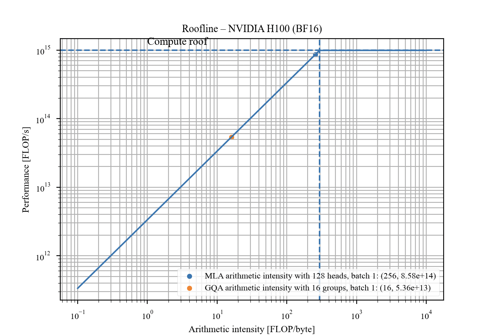
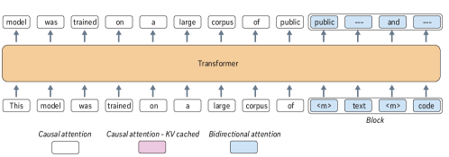

Note: I am not going to include any ideas during this series that would otherwise appear in upcoming papers as a part of the main narrative.
Prior to this blog post I would strongly suggest reading these three papers: Block Diffusion: Interpolating Between Autoregressive and Diffusion Language Models, Set Block Decoding is a Language Model Inference Accelerator, and TiDAR: Think in Diffusion, Talk in Autoregression.
Diffusion models have accumulated much allure; various companies up until this point have released diffusion language models with some success, including Mercury, Gemma diffusion, NVIDIA (1, 2, 3), and of course our upcoming model.
There are various hardware considerations one must make when pursuing a block diffusion style model.
Arithmetic Intensity
The arithmetic intensity of an operation can be defined as the flops of an operation divided by the bytes needed to be pulled through the memory hierarchy for that operation:
\[ \mathrm{AI} = \frac{\text{FLOPs}}{\text{bytes moved}} \]We are going to ignore prefill and training since these should of course be compute bound. Let's derive the arithmetic intensity for an MoE during decode, which consists of GQA and an expert layer with MLPs (in its simplest form). Take batch size \(B\), context length \(S\), head dimension \(d\), \(n_q\) query heads, and \(n_{kv}\) key-value heads.
Attention
Per decode step, the \(QK^\top\) matmul and the \(AV\) matmul each cost \(2\,B\,S\,n_q\,d\) flops:
\[ \text{FLOPs}_{\text{attn}} \approx \underbrace{2\,B\,S\,n_q\,d}_{QK^\top} + \underbrace{2\,B\,S\,n_q\,d}_{AV} = 4\,B\,S\,n_q\,d \]The bytes are dominated by streaming the KV cache (two tensors, 2 bytes each in bf16 — query/output bytes are negligible since \(S \cdot n_{kv} \gg 1 \cdot n_q\) for most of decode):
\[ \text{Bytes}_{\text{attn}} \approx 2 \cdot 2 \cdot B\,S\,n_{kv}\,d = 4\,B\,S\,n_{kv}\,d \]Therefore, the arithmetic intensity of attention during decode is simply the number of query heads per KV head, or the group size:
\[ \mathrm{AI}_{\text{attn}} = \frac{4\,B\,S\,n_q\,d}{4\,B\,S\,n_{kv}\,d} = \frac{n_q}{n_{kv}} = G \]Attention arithmetic intensity is batch-invariant during decode, because every new request brings its own KV cache. Batching helps MoE (below) but does nothing for attention — keep this asymmetry in mind, it's the reason block diffusion is interesting from a hardware perspective. While the attention is batch invariant, empirical speedup can be achieved by scaling batch, as this increases occupancy and gets you closer to the bandwidth peak that our calculations were based on.
MoE
With model dimension \(d_{\text{model}}\), expert FFN dimension \(d_{\text{ffn}}\), \(E\) experts, and \(k\) experts active per token (ignoring the activation function), the expert layer costs:
\[ \text{FLOPs}_{\text{moe}} \approx 4\,B\,d_{\text{model}}\,d_{\text{ffn}}\,k \]while at decode batch sizes every expert's weights still have to be pulled through the memory hierarchy (two projection matrices, 2 bytes each in bf16):
\[ \text{Bytes}_{\text{moe}} \approx 4\,d_{\text{model}}\,d_{\text{ffn}}\,E \]In theory, with a balanced MoE the arithmetic intensity is:
\[ \mathrm{AI}_{\text{moe}} = \frac{B\,k}{E} \]For our models (\(k=1\)) this is just \(B/E\), which is incredibly low.
The roofline
Remember that the arithmetic intensity is a theoretical calculation that no kernel can beat, and it can tell you the theoretical speed of your operation. However, the issue with both of the numbers above is that they are generally extremely memory bandwidth bound, and sit you left of the ridge on a roofline plot. The ridge sits where the two bounds meet:
\[ \mathrm{AI}^{*} = \frac{\text{peak FLOP/s}}{\text{memory bandwidth}} \qquad \left(\text{H100, bf16:}\ \frac{989\ \text{TFLOP/s}}{3.35\ \text{TB/s}} \approx 295\ \text{FLOPs/byte}\right) \]
For attention, which is batch invariant and simplest, most GQA configurations place you squarely on the left of the ridge, where your performance is capped due to memory bandwidth. For MoE, under most conventional decoding setups, unless you have extremely large batch sizes, it is quite difficult to approach compute bound.
If you notice in this plot that MLA has significantly higher arithmetic intensity, it is because of the shared-KV MQA mode switch aspect of MLA, which DeepSeek still utilizes today by simply running their attention entirely with shared-KV MQA. While this places MLA near the ridge, the intensity is bought with extra flops that could be better utilized. If you then stack another intensity-scaling technique on top (spec dec, or diffusion as we'll see), you can overshoot into being compute bound, at which point falling back from shared-KV MQA or using a GQA arch and spending the idle bandwidth instead can actually be more performant (although who knows what devices DeepSeek runs inference on).
Block diffusion
In block diffusion style models, each forward pass during decode processes \(b\) (block size) query tokens per sequence instead of 1. The KV cache bytes are unchanged and the expert weight bytes are unchanged, so only the flops scale.

Here is an example of a potential diffusion style with set block decoding, which decodes a block of tokens each pass using bidirectional attention within the block and an entropy bounded sampler. The calcs below also apply to block diffusion, block uniform state diffusion (Gemma), and TiDAR (although only in a two-forward mode).
Some fermi calcs — for attention:
\[ \mathrm{AI}_{\text{attn}} = \frac{4\,B\,b\,S\,n_q\,d}{4\,B\,S\,n_{kv}\,d} = b \cdot \frac{n_q}{n_{kv}} = b\,G \]and for the expert layer:
\[ \mathrm{AI}_{\text{moe}} = \frac{4\,B\,b\,d_{\text{model}}\,d_{\text{ffn}}\,k} {4\,d_{\text{model}}\,d_{\text{ffn}}\,E} = \frac{B\,b\,k}{E} \]Both ops scale by block size. On an H100 (~989 bf16 TFLOPs, 3.35 TB/s, ridge at ~295 flops/byte): a 64q/8kv GQA config sits at \(\mathrm{AI} = 8\) under traditional AR decode; with \(b = 32\) it sits at \(256\). An MoE with \(k = 8\) over \(E = 256\) experts at \(B = 64\) sits at \(\mathrm{AI} = 2\) under AR decode; \(b = 32\) increases it to \(64\) — note this is still quite memory bandwidth bound, but at least we are using the tensor cores a little more.
Now in EAGLE, dflash, dspark, medusa, etc., the argument for speculation is there as well, but oftentimes the verification length for these models is far below what you would expect a typical block for diffusion to be, although dflash and spark are closer. The discussion on the overhead of this form of speculation is out of scope for this post, but I might cover it in a subsequent one.
Quantization
Arithmetic intensity arguments change under quantization. The next generation of devices (the Blackwell series, AMD MI355X, MI455X, etc.) all have much higher arithmetic intensities in quantized formats like fp8 and fp4. Some numbers of the rooflines:
| GPU | mem bw (TB/s) | bf16 (PF) | fp8 (PF) | fp4 (PF) | ridge bf16 | ridge fp8 | ridge fp4 |
|---|---|---|---|---|---|---|---|
| H100 | 3.35 | 0.99 | 1.98 | – | 295 | 591 | – |
| H200 | 4.8 | 0.99 | 1.98 | – | 206 | 412 | – |
| B200 | 8.0 | 2.25 | 4.5 | 9.0 | 281 | 562 | 1125 |
| B300 | 8.0 | 2.25 | 4.5 | 15.0 | 281 | 562 | 1875 |
| MI300X | 5.3 | 1.31 | 2.61 | – | 247 | 493 | – |
| MI355X | 8.0 | 2.5 | 5.0 | 10.1 | 312 | 625 | 1263 |
| MI455X | 19.6 | – | 20 | 40 | – | 1020 | 2041 |
Use of the quantized flops has not generally been possible in attention until recently with sparse attentions (MiniMax Sparse Attention, DeepSeek-V3.2's DeepSeek Sparse Attention). Sparse attentions enable fully quantized indexers, where the bulk of the sequence mixing flops and latency go. With these sorts of numbers it is practically impossible to hit the ridge of the roofline with attention without significant diffusion or block size inference, and thus it is important to start improving such methods in conjunction with sparse attention. It is far easier to scale flops than bandwidth, and thus we need to make architecture choices accordingly.
The point of this post is a simple derivation that diffusion models have a hardware aware argument, in that the flops that are used by diffusion models are flops that would otherwise be unused. This doesn't actually change the throughput unless you have good toks/NFE, which is an entirely separate post that I'll probably make on what actually gets you to losslessly have high toks/NFE, since there are about 100 diff methods out there.
References
- M. Arriola, A. Gokaslan, J. T. Chiu, Z. Yang, Z. Qi, J. Han, S. S. Sahoo, V. Kuleshov. “Block Diffusion: Interpolating Between Autoregressive and Diffusion Language Models.” arXiv:2503.09573, 2025.
- I. Gat, H. Ben-Hamu, M. Havasi, D. Haziza, J. Reizenstein, G. Synnaeve, D. Lopez-Paz, B. Karrer, Y. Lipman. “Set Block Decoding is a Language Model Inference Accelerator.” arXiv:2509.04185, 2025.
- J. Liu, X. Dong, Z. Ye, R. Mehta, Y. Fu, V. Singh, J. Kautz, C. Zhang, P. Molchanov. “TiDAR: Think in Diffusion, Talk in Autoregression.” arXiv:2511.08923, 2025.
- Inception Labs. “Introducing Mercury 2.” Blog post.
- Google. “Gemma diffusion: faster text generation.” Blog post.
- Y. Fu et al. “Nemotron-Labs-Diffusion: A Tri-Mode Language Model Unifying Autoregressive, Diffusion, and Self-Speculation Decoding.” arXiv:2607.05722, 2026.
- F. Reda, J. Kamalu, R. Waleffe, M. Patwary, M. Shoeybi, B. Catanzaro. “Nemotron-Labs-TwoTower: Diffusion Language Modeling with Pretrained Autoregressive Context.” arXiv:2606.26493, 2026.
- Zyphra. “ZAYA1-8B Diffusion (preview).” Blog post, 2026.
- T. Figliolia, N. Alonso, R. Iyer, Q. Anthony, B. Millidge. “Compressed Convolutional Attention: Efficient Attention in a Compressed Latent Space.” arXiv:2510.04476, 2025.
- Y. Li, F. Wei, C. Zhang, H. Zhang. “EAGLE: Speculative Sampling Requires Rethinking Feature Uncertainty.” arXiv:2401.15077, 2024.
- J. Chen, Y. Liang, Z. Liu. “DFlash: Block Diffusion for Flash Speculative Decoding.” arXiv:2602.06036, 2026.
- X. Cheng et al. “DSpark: Confidence-Scheduled Speculative Decoding with Semi-Autoregressive Generation.” arXiv:2607.05147, 2026.
- T. Cai, Y. Li, Z. Geng, H. Peng, J. D. Lee, D. Chen, T. Dao. “Medusa: Simple LLM Inference Acceleration Framework with Multiple Decoding Heads.” arXiv:2401.10774, 2024.
- X. Lai et al. “MiniMax Sparse Attention.” arXiv:2606.13392, 2026.
- DeepSeek-AI. “DeepSeek-V3.2: Pushing the Frontier of Open Large Language Models.” arXiv:2512.02556, 2025.
Citation
If you found this post useful, please cite it as:
@misc{iyer2026arithmeticintensity,
title = {language diffusion pt 1: arithmetic intensity primer},
author = {Iyer, Rishi},
year = {2026},
url = {https://rishiiyer.com/writings/language-diffusion-pt1.html}
}